Frequency Domain Identification: Estimating Models Using Frequency Domain Data
This demo illustrates the use of frequency domain data in System Identification Toolbox™. Estimation and validation of models in the toolbox using frequency domain data work the same way as they do with time domain data. This provides users a great amount of flexibility in estimation and analysis of models using time and frequency domain as well as spectral (FRF) data. A user may simultaneously estimate models using data in both domains, compare and combine these models. A model estimated using time domain data may be validated using spectral data or vice-versa.
Note that frequency domain data can not be used for estimation or validation of nonlinear models.
Contents
- Introduction
- Inspecting Frequency Domain Data
- Estimating Models Using Frequency Response (FRF) Data
- Condensing Data Using SPAFDR
- Estimation Using Frequency-Domain I/O Data
- Transformations Between Data Representations (Time - Frequency)
- Using Continuous-time Frequency-domain Data to Estimate Continuous-time Models
- Conclusions
- Additional Information
Introduction
Frequency domain experimental data are common in many applications. It could be that the data was collected as frequency response data (frequency functions: FRF) from the process using a frequency analyzer. It could also be that it is more practical to work with the input's and output's Fourier transforms (fft of time-domain data), for example to handle periodic or band-limited data. (A band-limited continuous time signal has no frequency components above the Nyquist frequency). In System Identification Toolbox, frequency domain I/O data are represented the same way as time-domain data, i.e., using iddata objects. The 'domain' property of the object must be set to 'Frequency'. Frequency response data are represented as complex vectors or as magnitude/phase vectors as a function of frequency. IDFRD objects in the toolbox are used to encapsulate FRFs, where a user specifies the complex response data and a frequency vector. Such IDDATA or IDFRD objects may be used seamlessly with any estimation routine (such as pem, idproc etc).
Inspecting Frequency Domain Data
Let us begin this demo by loading some frequency domain data:
load demofr
This MAT-file contains frequency response data at frequencies W, with the amplitude response AMP and the phase response PHA. Let us first have a look at the data:
subplot(211), loglog(W,AMP),title('Amplitude Response') subplot(212), semilogx(W,PHA),title('Phase Response')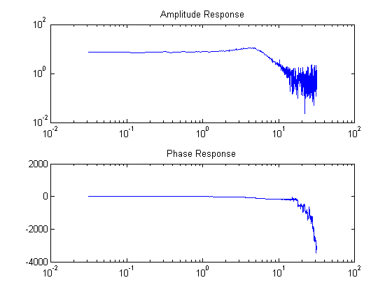
This experimental data will now be stored as an IDFRD object. First transform amplitude and phase to a complex valued response:
zfr = AMP.*exp(i*PHA*pi/180); Ts = 0.1; gfr = idfrd(zfr,W,Ts);
Ts is the sampling interval of the underlying data. If the data corresponds to continuous time, for example since the input has been band-limited, use Ts = 0.
Note: If you have the Control System Toolbox™, you could use an FRD object instead of the IDFRD object. IDFRD has options for more information, like disturbance spectra and uncertainty measures which are not available in FRD objects.
The IDFRD object gfr now contains the data, and it can be plotted and analyzed in different ways. (See HELP IDFRD and IDPROPS IDFRD for complete lists of properties). To view the data, we may use plot or bode:
bode(gfr), legend('gfr')
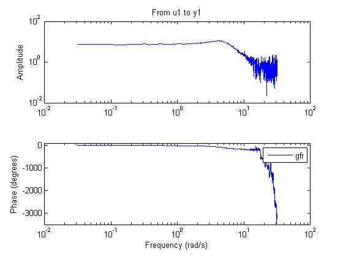 Estimating Models Using Frequency Response (FRF) Data
To estimate models, you can now use gfr as a data set with all the commands of the toolbox in a transparent fashion. The only restriction is that noise models cannot be built. This means that for polynomial models only OE (output-error models) apply, and for state-space models, you have to fix K = 0.
m1 = oe(gfr,[2 2 1]) % Discrete-time Output error (transfer function) model ms = pem(gfr) % Discrete-time state-space model with default choice of order mproc = pem(gfr,'p2uzd','Td',{'max',10}) % 2nd-order, continuous-time model with underdamped poles compare(gfr,m1,ms,mproc)
Discrete-time IDPOLY model: y(t) = [B(q)/F(q)]u(t) + e(t)
B(q) = 0.9982 q^-1 + 0.4974 q^-2
F(q) = 1 - 1.499 q^-1 + 0.6998 q^-2
Estimated using OE on data set gfr
Loss function 0.249152 and FPE 0.250148
Sampling interval: 0.1 s
State-space model: x(t+Ts) = A x(t) + B u(t) + K e(t)
y(t) = C x(t) + D u(t) + e(t)
A =
x1 x2
x1 0.81907 -0.53501
x2 0.2669 0.68006
B =
u1
x1 3.8574
x2 -1.9209
C =
x1 x2
y1 0.50943 0.50335
D =
u1
y1 0
K =
y1
x1 0
x2 0
x(0) =
x1 0
x2 0
Estimated using PEM using SearchMethod = Auto from data set gfr
Loss function 0.248653 and FPE 0.249648
Sampling interval: 0.1 s
Process model with transfer function
1+Tz*s
G(s) = Kp * ---------------------- * exp(-Td*s)
1+2*Zeta*Tw*s+(Tw*s)^2
with Kp = 7.4612
Tw = 0.20262
Zeta = 0.3621
Td = 0
Tz = 0.013666
Estimated using PEM using SearchMethod = Auto from data set gfr
Loss function 0.249213 and FPE 0.250459
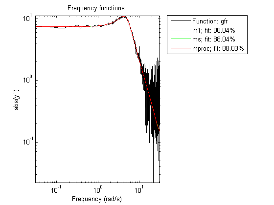 As demonstrated above a variety of linear model types may be estimated in both continuous and discrete time domains, using spectral data. These models may be validated using, time-domain data. The time-domain I/O data set ztime, for example, is collected from the same system, and can be used for validation of m1, ms and mproc:
compare(ztime,m1,ms,mproc) %validation in a different domain
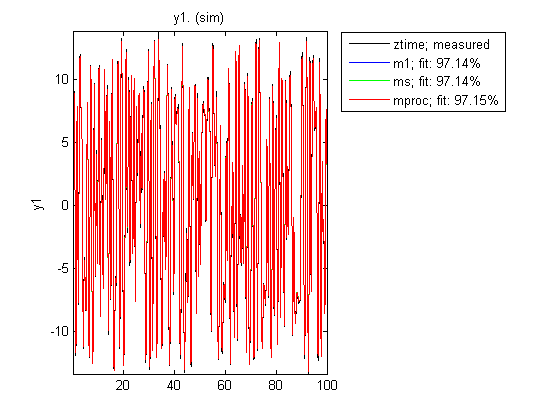 We may also look at the residuals to affirm the quality of the model using the validation data ztime. As observed, the residuals are almost white:
resid(mproc,ztime) % Residuals plot
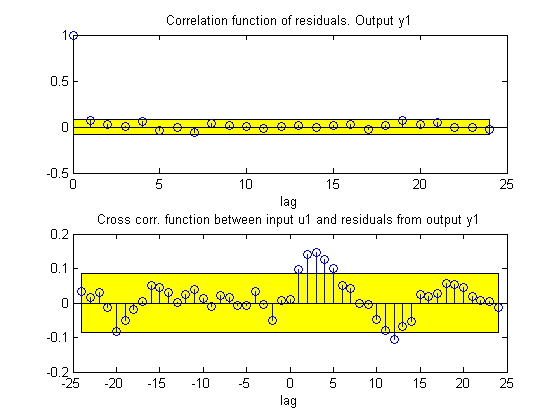 Condensing Data Using SPAFDR
An important reason to work with frequency response data is that it is easy to condense the information with little loss. The command SPAFDR allows you to compute smoothed response data over limited frequencies, for example with logarithmic spacing. Here is an example where the gfr data is condensed to 100 logarithmically spaced frequency values. With a similar technique, also the original time domain data can be condensed:
sgfr = spafdr(gfr) % spectral estimation with frequency-dependent resolution sz = spafdr(ztime); % spectral estimation using time-domain data bode(gfr,sgfr,sz), legend('gfr (raw data)','sgfr','sz','location','southwest')
IDFRD model sgfr. Contains Frequency Response Data for 1 output and 1 input and SpectrumData for disturbances at 1 output at 100 frequency points, ranging from 0.031416 rad/s to 31.416 rad/s. Output Channels: y1 Input Channels: u1 Sampling time: 0.1 Estimated from data set gfr using SPAFDR.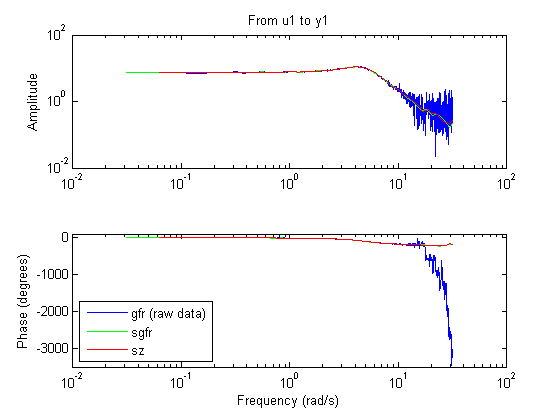
The Bode plots show that the information in the smoothed data has been taken well care of. Now, these data records with 100 points can very well be used for model estimation. For example:
msm = oe(sgfr,[2 2 1]);
compare(ztime,msm,m1) % msm has the same accuracy as M1 (based on 1000 points)
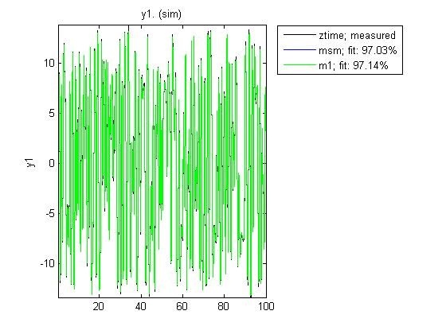 Estimation Using Frequency-Domain I/O Data
It may be that the measurements are available as Fourier transforms of inputs and output. Such frequency domain data from the system are given as the signals Y and U. In loglog plots they look like
Wfd = [0:500]'*10*pi/500; subplot(211),loglog(Wfd,abs(Y)),title('The amplitude of the output') subplot(212),loglog(Wfd,abs(U)),title('The amplitude of the input')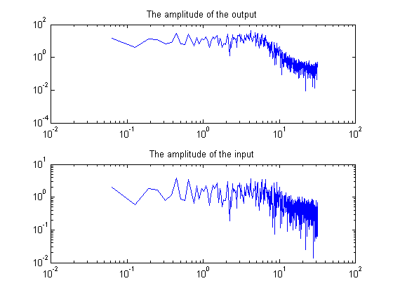
The frequency response data is essentially the ratio between Y and U. To collect the frequency domain data as an IDDATA object, do as follows:
ZFD = iddata(Y,U,'ts',0.1,'Domain','Frequency','Freq',Wfd)
Frequency domain data set with responses at 501 frequencies,
ranging from 0 to 31.416 rad/s
Sampling interval: 0.1
Outputs Unit (if specified)
y1
Inputs Unit (if specified)
u1
Now, again the frequency domain data set ZFD can be used as data in all estimation routines, just as time domain data and frequency response data:
mf = pem(ZFD); compare(ztime,mf,m1)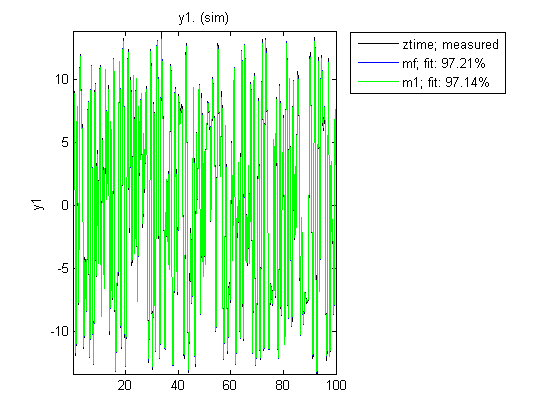
Transformations Between Data Representations (Time - Frequency)
Time and frequency domain input-output data sets can be transformed to either domain by using FFT and IFFT. These commands are adapted to IDDATA objects:
dataf = fft(ztime) datat = ifft(dataf)
Frequency domain data set with responses at 501 frequencies,
ranging from 0 to 31.416 rad/s
Sampling interval: 0.1
Outputs Unit (if specified)
y1
Inputs Unit (if specified)
u1
Time domain data set with 1000 samples.
Sampling interval: 0.1
Outputs Unit (if specified)
y1
Inputs Unit (if specified)
u1
Time and frequency domain input-output data can be transformed to frequency response data by SPAFDR, SPA and ETFE:
g1 = spafdr(ztime) g2 = spafdr(ZFD); bode(g1,g2)
IDFRD model g1. Contains Frequency Response Data for 1 output and 1 input and SpectrumData for disturbances at 1 output at 100 frequency points, ranging from 0.062832 rad/s to 31.416 rad/s. Output Channels: y1 Input Channels: u1 Sampling time: 0.1 Estimated from data set ztime using SPAFDR.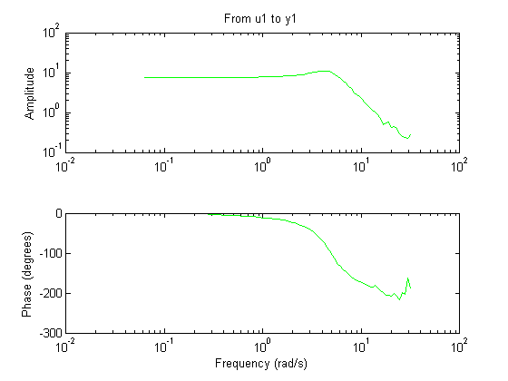
Frequency response data can also be transformed to more smoothed data (less resolution and less data) by SPAFDR and SPA;
g3 = spafdr(gfr);
Frequency response data can be transformed to frequency domain input-output signals by the command IDDATA:
gfd = iddata(g3)
Frequency domain data set with responses at 100 frequencies,
ranging from 0.031416 to 31.416 rad/s
Sampling interval: 0.1 s
Outputs Unit (if specified)
y1
Inputs Unit (if specified)
u1
Using Continuous-time Frequency-domain Data to Estimate Continuous-time Models
Time domain data can naturally only be stored and dealt with as discrete-time, sampled data. Frequency domain data have the advantage that continuous time data can be represented correctly. Suppose that the underlying continuous time signals have no frequency information above the Nyquist frequency, e.g. because they are sampled fast, or the input has no frequency component above the Nyquist frequency. Then the Discrete Fourier transforms (DFT) of the data also are the Fourier transforms of the continuous time signals, at the chosen frequencies. They can therefore be used to directly fit continuous time models. In fact, this is the correct way of using band-limited data for model fit.
This will be illustrated by the following example.
Consider the continuous time system:
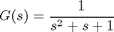
m0 = idpoly(1,1,1,1,[1 1 1],'ts',0)
Continuous-time IDPOLY model: y(t) = [B(s)/F(s)]u(t) + e(t)
B(s) = 1
F(s) = s^2 + s + 1
This model was not estimated from data.
Choose an input with low frequency contents that is fast sampled:
s = RandStream.create('mt19937ar','seed',235); RandStream.setDefaultStream(s) u = idinput(500,'sine',[0 0.2]); u = iddata([],u,0.1,'intersamp','bl');
0.1 is the sampling interval, and 'bl' indicates that the input is band-limited, i.e. in continuous time it consists of sinusoids with frequencies below half the sampling frequency. Correct simulation of such a system should be done in the frequency domain:
uf = fft(u); uf.ts = 0; % Denoting that the data is continuous time yf = sim(m0,uf); % % Add some noise to the data: yf.y = yf.y + 0.05*(randn(s,size(yf.y))+1i*randn(size(yf.y))); dataf = [yf uf] % This is now a continuous time frequency domain data set.
Frequency domain data set with responses at 251 frequencies,
ranging from 0 to 31.416 rad/s
Sampling interval: 0
Outputs Unit (if specified)
y1
Inputs Unit (if specified)
u1
Look at the data:
plot(dataf)

Using dataf for estimation will by default give continuous time models: State-space:
m4 = pem(dataf,2); %Second order continuous-time model
For a polynomial model with nb = 2 numerator coefficient and nf = 2 estimated denominator coefficients use:
nb = 2; nf = 2; m5 = oe(dataf,[nb nf])
Continuous-time IDPOLY model: y(t) = [B(s)/F(s)]u(t) + e(t)
B(s) = -0.01761 s + 1
F(s) = s^2 + 0.9873 s + 0.9902
Estimated using OE on data set dataf
Loss function 0.00467031 and FPE 0.00481976
Compare step responses with uncertainty of the true system m0 and the models m4 and m5:
step(m0,m4,m5,'sd',3) % *Blue: m0, Green: m4, Red: m5.* % The confidence intervals are shown with dotted lines.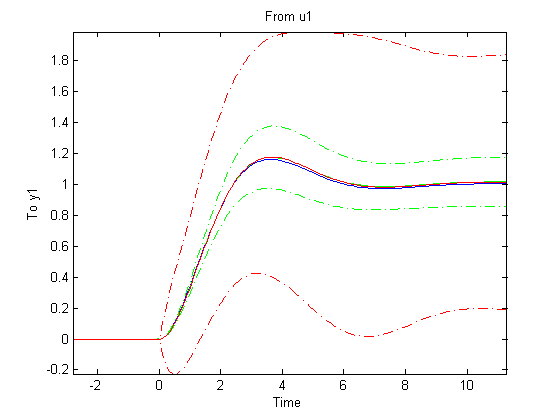
Although it was not necessary in this case, it is generally advised to focus the fit to a limited frequency band (low pass filter the data) when estimating using continuous time data. The system has a bandwidth of about 3 rad/s, and was excited by sinusoids up to 6.2 rad/s. A reasonable frequency range to focus the fit to is then [0 7] rad/s:
m6 = pem(dataf,2,'foc',[0 7]); m7 = oe(dataf,[1 2],'foc',[0 7]); step(m0,m6,m7,'sd',3) % *Blue: m0, Green: m6, Red: m7.* % The confidence intervals are shown with dotted lines.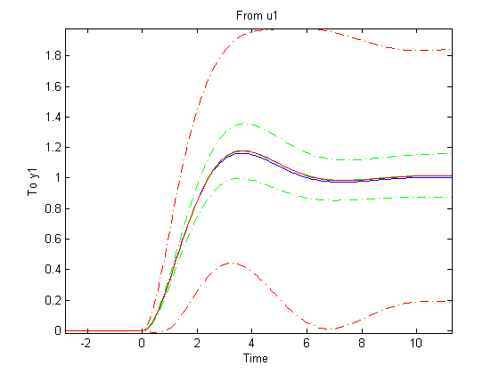
Conclusions
We saw how time, frequency and spectral data can seamlessly be used to estimate a variety of linear models in both continuous and discrete time domains. The models may be validated and compared in domains different from the ones they were estimated in. The data formats (time, frequency and spectrum) are interconvertible, using methods such as fft, ifft, spafdr and spa. Furthermore, direct, continuous-time estimation is achievable by using IDPROC models or using continuous-time IDFRD (spectrum) data with any estimation routine. The seamless use of data in any domain for estimation and analysis is an important feature of System Identification Toolbox.
Additional Information
For more information on identification of dynamic systems with System Identification Toolbox visit the System Identification Toolbox product information page.